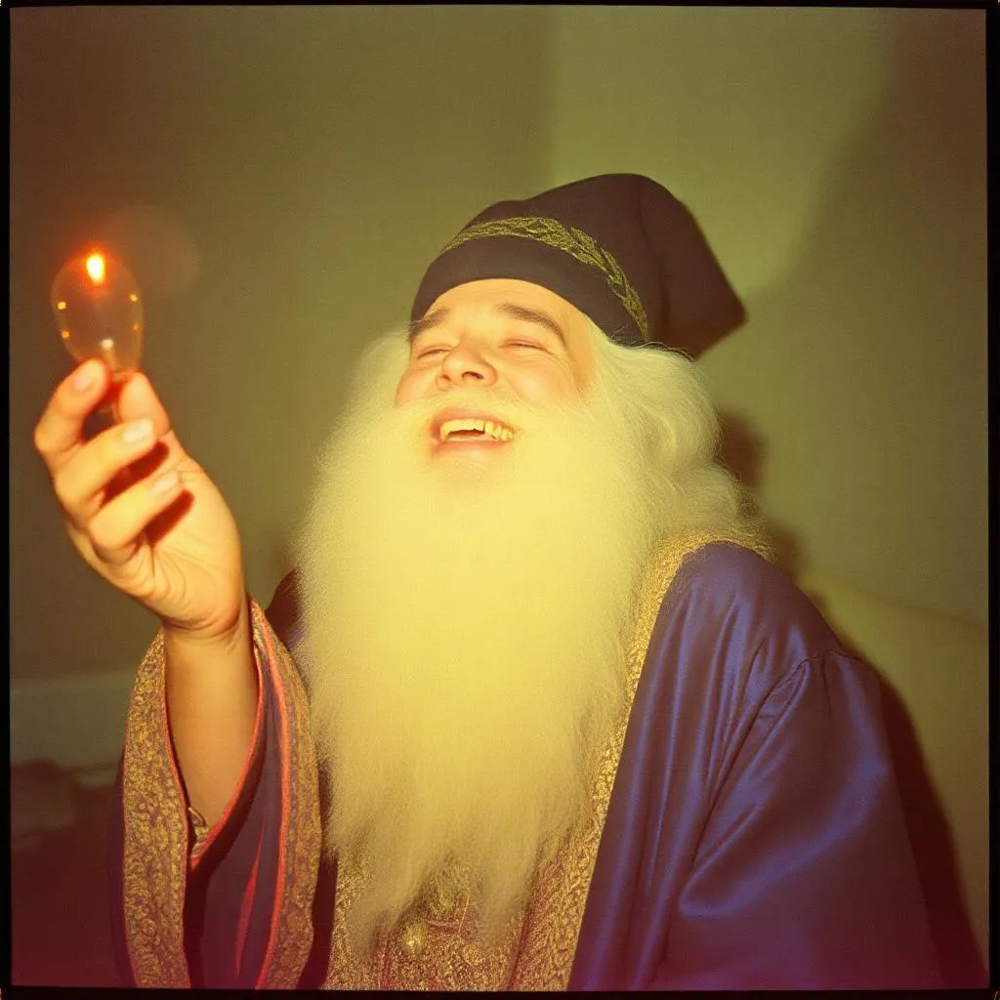

Zibbo, a Léleknevető
Zibbo nem riadt meg az Éjkönyvben rejlő bánattól. Nem próbálta elnyomni, nem nevetett fölötte – meghallgatta. Először életében csendben ült, és olvasta a világ elfojtott történeteit: a kislányt, aki senkinek nem mert beszélni; az öregembert, aki utolsó viccét is magában tartotta; a népeket, akik elfelejtették, hogyan kell örülni. És ahogy olvasott, a varázslata megváltozott. Nem volt már harsány bohóctrükk. Nem kellett hozzá trombita vagy konfetti. Elég volt egy sóhaj, egy apró, szelíd varázsmozdulat – és az emberek érezték, hogy megértik egymást. Nevetni kezdtek, de másképp. Nem azért, mert vicces volt – hanem mert könnyebbek lettek a lelkükben. Zibbo új művészetet alkotott: az érző nevetést. Nem űzte el a szomorúságot – megtanította az embereket, hogy ne féljenek tőle. Hogy nevetni nem azt jelenti, hogy elrejtjük a fájdalmunkat, hanem hogy elengedjük. Így lett ő a Léleknevető, akinek színpada nem kőszínpad vagy porond volt, hanem a világ összes sebe, amiket óvatos, kedves mágiával gyógyított be – egy mosollyal, egy emlékkel, egy történettel.
